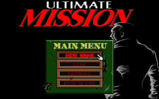
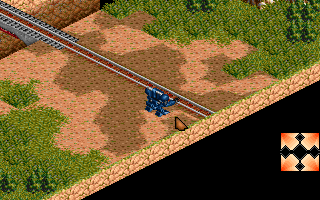

名稱：終極任務Z／終極任務 (Ultimate Mission，中文版) 簡介：鷹揚1996年出品的策略角色扮演遊戲 [待補]。

保護：圖案密碼，破解碼： UM.EXE 74 17 6A 07 (密碼隨便輸入) EB -- -- -- 或 (先用UNP解壓) F4 C9 CB C9 CB 55 (不用輸入密碼，但也會沒有音效與音樂) -- -- -- -- -- CB 備註：2000年光碟版必須在Windows上安裝，然後在DOS上執行。其內容同磁片版。 備註：電腦速度不可太快，否則可能會偵測不到音效卡而沒有音樂。